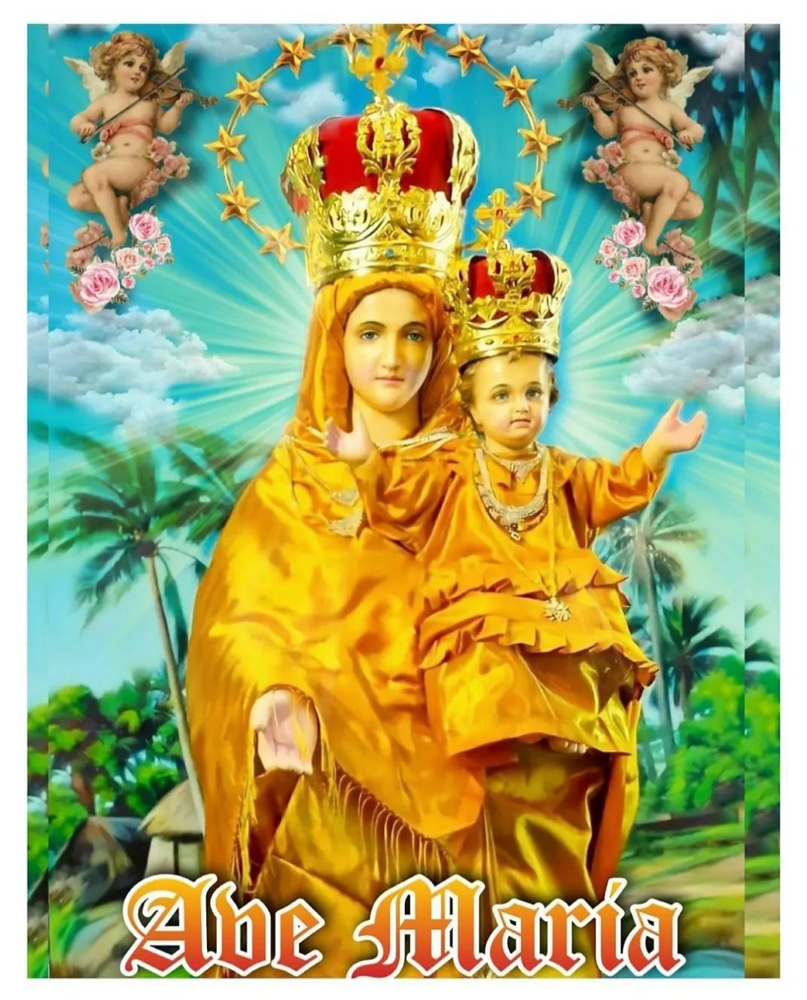
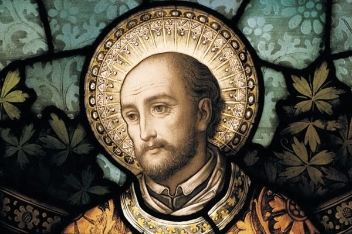

OUR SUBSTATIONS
-
IRUTHAYA ANDAVAR CHURCH
sholavanthan
என் இறைவனாகிய தந்தையே! நீர் நன்மை நிறைந்தவர்,
எனவே எல்லாவற்றிற்கும் மேலாக உம்மை நான் அன்பு செய்கிறேன்.
என் பாவங்களால் உமது அன்பை மறந்ததற்காக மனம் வருந்துகிறேன் ஆமென்..
-
ST.ANTONY'S CHURCH
oormetchikulam
பாவிகளுக்கு வெளிச்சம் கொடுக்கிறவரான புனித அந்தோணியாரே ....
எங்களுக்காக வேண்டிக்கொள்ளும் .
-
INFANT JESUS CHURCH
m.g.r nagar
இரக்கமே உருவான குழந்தை இயேசுவே!
உம் இனிய இதயம் கனிவோடு எங்கள் செபத்தை ஏற்று வரத்தை அளித்தருளும்படி பணிவாக உம்மை இறைஞ்சி வேண்டுகிறோம்.
-

AROCKIYA MADHA CHURCH
keelamathur
சர்வலோகம் படைக்குமுன்னே சர்வேசுரனால் தெரிந்து கொள்ளப்பட்ட பரிசுத்த ஆரோக்கிய மாதாவே, எங்களுக்காக வேண்டிக்கொள்ளும்.
-

ST.IGNATIOUS CHURCH
thodaneri
தப்புள்ள கிரிகைகளையும், சிந்தனைகளையும் கண்டிப்பாய் நீக்கி விலக்கின புனித இஞ்ஞாசியாரே, எங்களுக்காக வேண்டிக்கொள்ளும்.
-
ST.ANTONY'S CHURCH
mannadi mangalam
தர்மநெறியில் மாறாத மனதை விரும்பினவரான புனித அந்தோனியாரே,
எங்களுக்காக வேண்டிக்கொள்ளும்